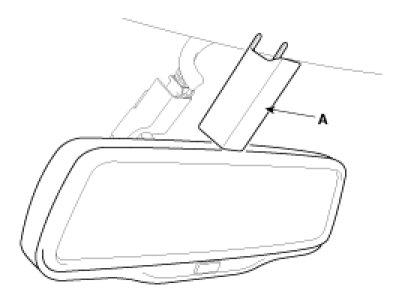
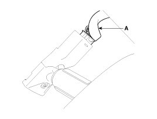
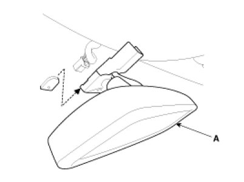

Repair Procedures
Inspection
Check it by the procedure below to see if the function of the ECM is normal.
1. Turn the ignition key to the "ON" position.
2. Cover the front sensor to stop functioning.
3. Shine a light at the rear sensor.
4. The ECM should be darkened as soon as the rear sensor detects the light.
NOTE:
If this test is performed in daytime, the ECM may be darkened as soon as the front sensor is covered.
5. When the reverse gear is engaged, the ECM should not be darkened.
6. When heading lights to both the front and rear sensors, the ECM should not be darkened.
Removal
1. Remove the mirror wiring cover (A).

2. Disconnect the mirror connector (A).

3. Slide the inside rear view mirror rearward to remove the inside rear view mirror assembly (A).

NOTE:
Take care not to damage the mounting bracket during removal.
Installation
1. Install the mirror assembly.
2. Install the mirror wiring cover and connector.
NOTE:
- Make sure the connector is plugged in properly.